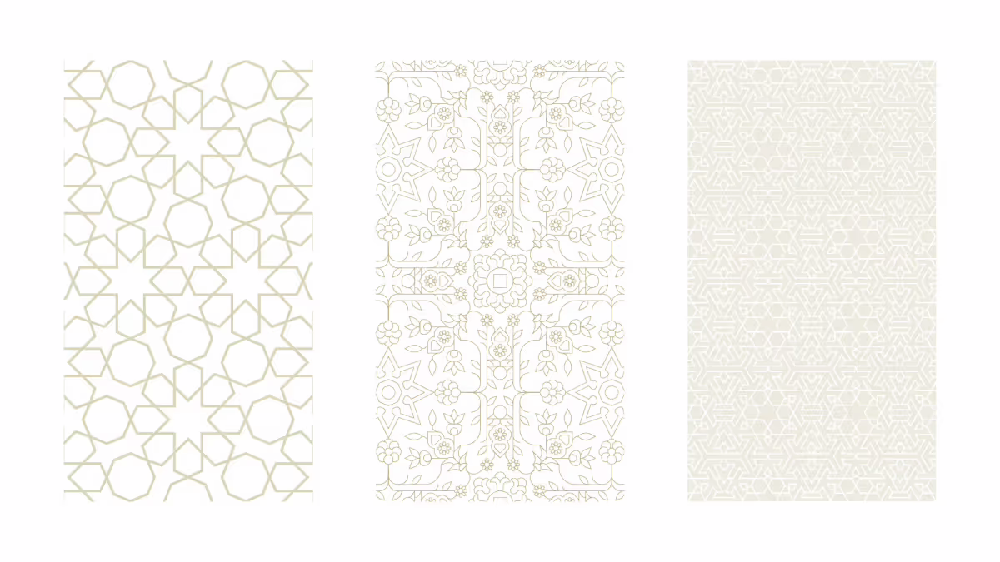
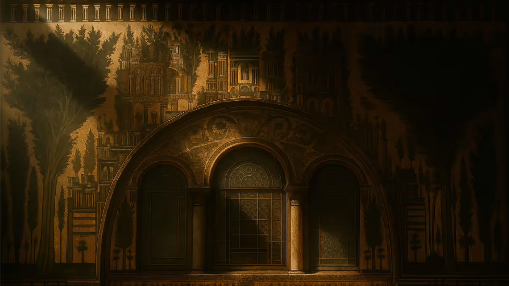
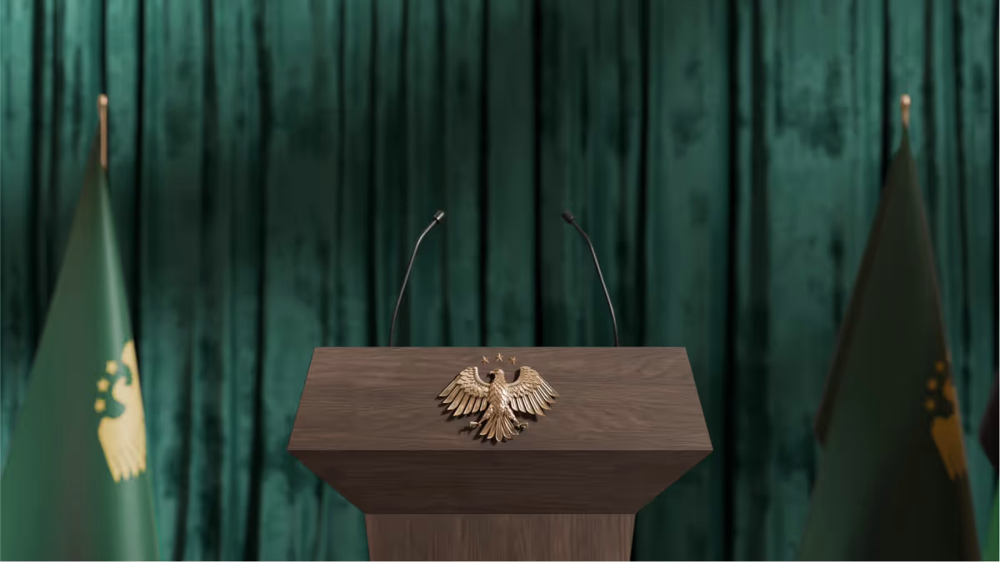

١
الشعار الرسمي
النسر الذهبي مع ثلاث نجوم خماسية تمثّل الشعب. يُستخدم في الترويسة والوثائق الرسمية، لا كرمز تفاعلي.
عرض الاستخداممنصة نقل دمشق تتبنّى الهوية البصرية الوطنية الجديدة للجمهورية العربية السورية كما اعتمدتها وزارة الخارجية والمغتربين: الأخضر الفيروزي العميق، الذهبي الفاتح، والزخارف المستوحاة من الحضارات السورية المتعاقبة.
أربعة عناصر تتكوّن منها الهوية: الشعار، اللوحة اللونية، الزخرفة، والطباعة. كل عنصر له دور محدّد لا يتبدّل.
النسر الذهبي مع ثلاث نجوم خماسية تمثّل الشعب. يُستخدم في الترويسة والوثائق الرسمية، لا كرمز تفاعلي.
عرض الاستخدامأخضر فيروزي عميق للإجراء الأساسي، ذهبي فاتح للتأكيد، أحمر للنجوم والخطر، أسود وأبيض للحبر والورق.
عرض الألوانزخارف هندسية مستوحاة من العمارة الأموية، تُستخدم كطبقة خلفية بشفافية أقل من ٠٫٦.
عرض الأنماطIBM Plex Sans Arabic للعربية بأوزان متعدّدة، Source Serif 4 للعناوين اللاتينية.
عرض الخطوطصور رسمية من إطلاق الهوية في يوليو ٢٠٢٥. الشعار، الزخارف، التطبيقات الحقيقية، ومصادر الإلهام.
النسر الذهبي مع ثلاث نجوم خماسية، والشعار النصّي ثنائي اللغة بنفس الوزن البصري.

زخارف هندسية مستوحاة من الحضارات السورية المتعاقبة — تُستخدم كخلفيات هادئة.

واجهة الجامع الأموي بدمشق — المصدر التاريخي للزخارف الجديدة.

تطبيق الهوية في مؤسسات الدولة — منصة، خلفية مخملية، علم محايد.
الأخضر الفيروزي للإجراء الأساسي، الذهبي للتأكيد والزخرفة، الأحمر للنجوم والخطر فقط.
الزخارف الذهبية على خلفية خضراء — كما تظهر في المنابر الرسمية وواجهات الوزارات.
للمنابر، الترويسات الرسمية، والشاشات الكبرى.
الزخرفة طبقة خلفية، لا تنافس النصّ.
فوق الزخرفة، يجب وضع النصّ داخل صندوق أبيض صلب للقراءة.
Readex Pro للعربية واللاتينية — خط مزدوج راقٍ من TypeTogether، ضمن قائمة الخطوط العربية المجانية المختارة من المرجع المنسَّق من علاء شليل. وزن متغيّر من ٢٠٠ إلى ٧٠٠، يعمل بكفاءة في واجهات الاستخدام والمحتوى التحريري. Source Serif 4 للعناوين اللاتينية، JetBrains Mono للأكواد.
Display · 44px — عناوين رئيسية
تتبع حافلات دمشق في الوقت الحقيقي
Real-time Damascus bus tracking
Heading · 28px — عناوين فرعية
الخريطة المباشرة
Live map
Body · 16px — متن
منصة وطنية مفتوحة المصدر تربط الركاب والسائقين والمشرفين بمواقع الحافلات وأوقات الوصول لحظياً، بدون إعلانات وبدون مقابل.
A national open-source platform connecting passengers, drivers, and dispatchers to live bus positions and accurate arrival times.